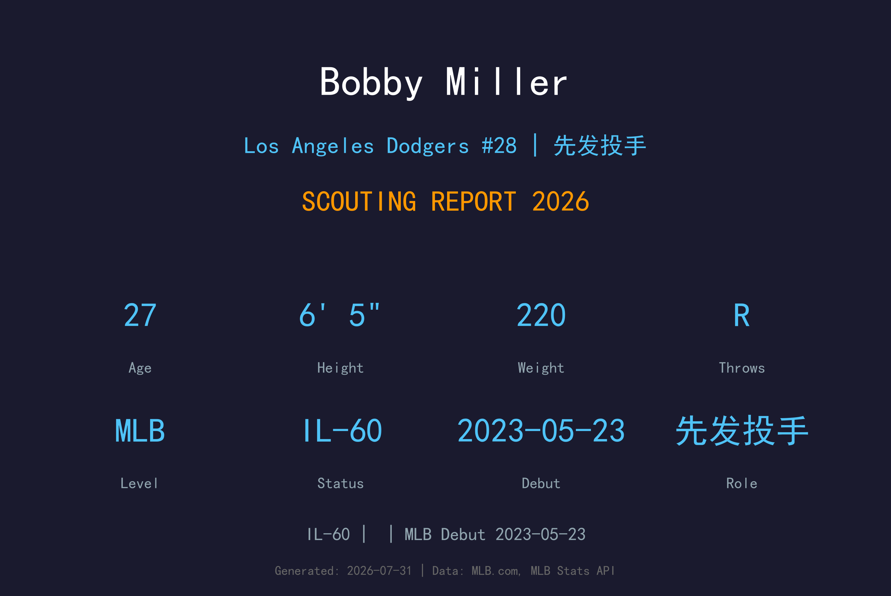
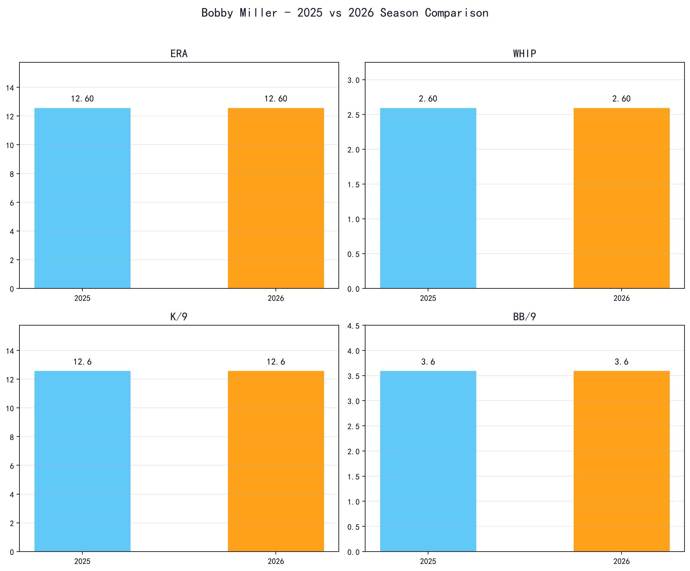
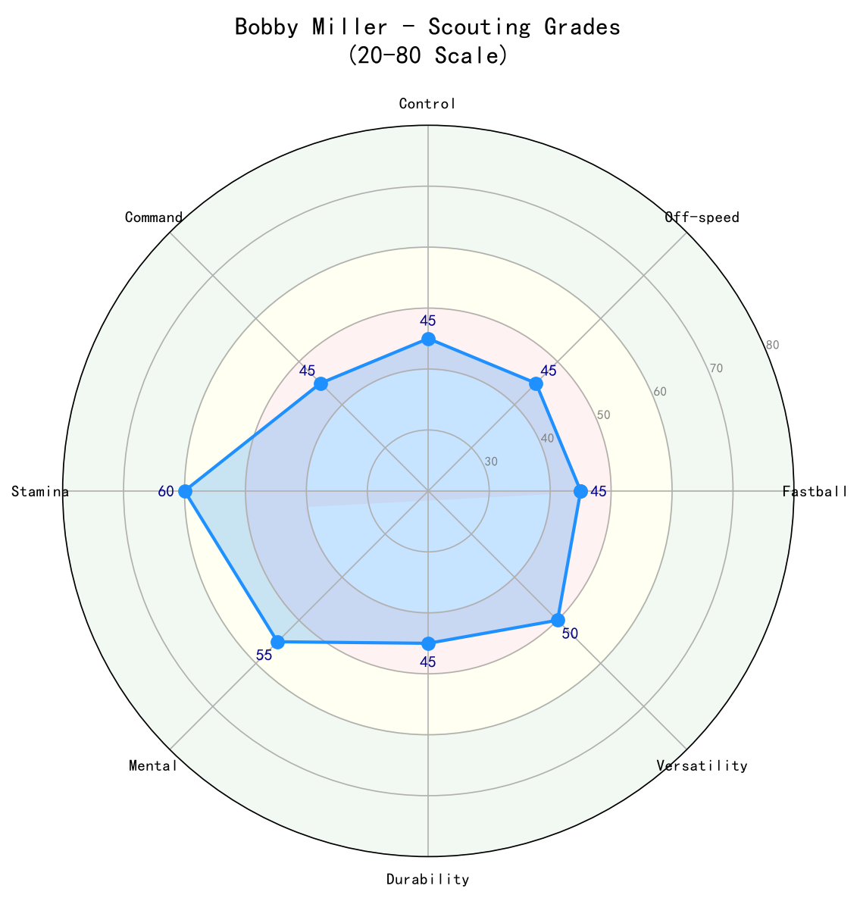

Los Angeles Dodgers #28 | 投手 | 伤病名单-60

Bobby Miller 曾是道奇农场评价最高的先发投手新秀之一，2023 年出道时展现 99 mph 速球与优质变化球，被视为未来轮值核心。然而过去两个赛季他饱受伤病、控球与全垒打问题困扰，生涯 ERA 高达 5.44，尚未兑现天赋。2026 年他进入 伤病名单-60，整季未能出赛。27 岁的 Miller 正处于职业生涯的十字路口：若能恢复健康并找回控球，他仍有成为 mid-先发轮值 starter 的 天花板；反之，道奇可能将他转为后援或交易筹码。
Bobby Miller 于 2023-05-23 登上大联盟，开始在高水平舞台展现自己的实力。
Bobby Miller 目前因伤位于 伤病名单-60 名单。恢复后，他将重新回到道奇的投手阵容中。
2026 年大联盟样本有限，数据主要参考小联盟与过往表现。

📈 上图为近三年核心数据趋势。柱状图高度代表该年度表现，便于快速比较球员状态的上升或下滑。
Miller 的速球具备 elite 球速，均速可达 98 mph。问题不在于球速，而在于控球与位置，偏高或偏中时容易被硬打。
主要变化球，横移明显，是 Miller 制造三振的重要武器。
对左打者的关键球种，使用频率与效果都不错。
第四球种，用于打乱节奏，但尚未成为稳定武器。
Miller 6 尺 5 寸的身材让他拥有理想的先发投手骨架，动作具有爆发力。但他的 mechanics 复杂度较高，容易导致控球失准与手臂疲劳。2024 年表现低迷可能与 mechanics 调整与伤病有关。

| 项目 | 评分 (20-80) | 等级 |
|---|---|---|
| 速球 | 65 | A- |
| 滑球 | 55 | B |
| 变速球 | 50 | B- |
| 曲球 | 45 | C+ |
| 控球 | 45 | C+ |
| 指挥 | 45 | C+ |
| 三振 | 55 | B |
| 健康 | 30 | C |
Bobby Miller 是道奇轮值中最大的"if"。天赋毋庸置疑，但健康与控球是两大门槛。
B- 级 / 高天赋但受伤的 young starter
Bobby Miller 是道奇 2020 年首轮第 29 顺位选中的右投，大学就读于 Louisville。2023 年出道时被誉为道奇新一代轮值希望，但随后因伤病与表现起伏陷入挣扎。他是道奇近年最受关注但也最令人失望的 young starter 之一。
*⚾ 洛杉矶道奇队球探报告*